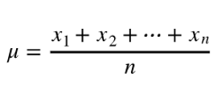
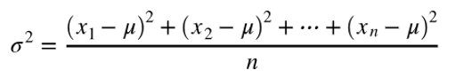
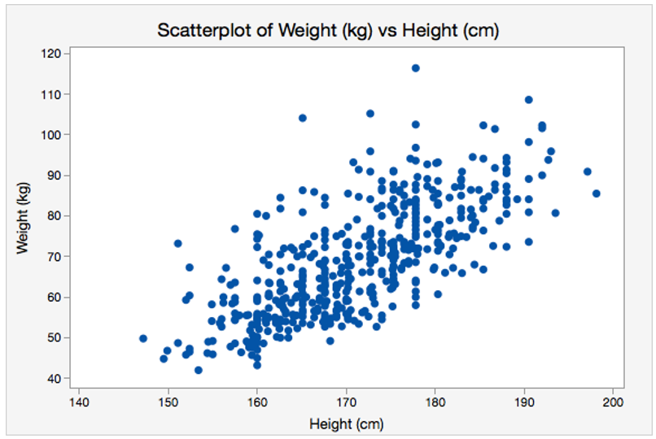
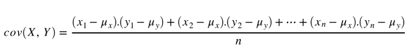
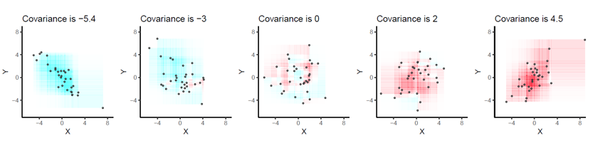
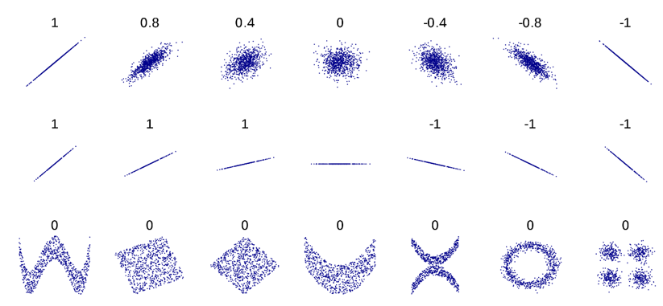

İstatistiksel model, veriler arasındaki bir ilişki ya da bir
matematiksel eşitliktir.
Veriye ve ölçümlere dayanarak bir model oluşturulabilir.
Örneğin,
boyu fazla olan insanların ağırlıklarının da fazla olduğu
gözlemleniyorsa, insanların boy ve ağırlıkları arasındaki ilişki
hakkında bir model oluşturabiliriz.
Burada modelimiz, "insanların
boyu ve ağırlıkları arasında pozitif bir ilişki vardır" olabilir. Bu
ilişkiyi bir matematiksel ifade şeklinde de belirtebiliriz.
Örneğin, a ve b adında 2 katsayı kullanarak "ağırlık = a x boy +
b" şeklinde bir eşitlik oluşturabilir ve bunun için en ideal a ve b
değerlerini bulabiliriz.
Burada ise modelimiz direkt bu eşitlik
olur.
Bir model oluşturduktan sonra o modeli tahminlerde
bulunmak için kullanabiliriz.
Örneğin, boy ve ağırlık ilişki
modelini kullanarak benden daha uzun bir insanın genellikle benden daha
kilolu olduğunu ileri sürebilirim. Ya da boy ve ağırlık ile ilgili bir
matematiksel eşitlik olan modeli kullanarak boyu bilinen bir insanın
kilosunu tahmin edebilirim.
İstatistik mini eteğe benzer; çok şey gösterir ama asıl görünmesi gerekeni asla göstermez.
Alex Ferguson
Histogram, bir
veri kümesinin frekans dağılımını gösteren grafiktir.
Yani bir veri kümesinde belirli aralıklarda kaçar tane verinin
bulunduğunu görmemizi sağlar. Aşağıda bir histogram grafiği
gösterilmiştir:
Bu grafikte x ekseninde öğrencilerin final sınavı notları, y ekseninde
ise notları belirli aralıklarda olan öğrencilerin sayısı vardır.
Örneğin, notu 70 ve 80 arasında olan 8 tane öğrenci vardır. Bu
grafiğe bakarak sınıftaki not dağılımını görebiliriz.
İstatistiksel dağılım, bir verideki ölçülerin nasıl dağıldığını
gösterir. Önceki konumuzda gördüğümüz histogram da bir istatistiksel
dağılım gösterme yöntemidir ve belirli aralıktaki ölçülerin veri
üzerinde sayıca dağılımını gösterir.
İstatistiksel dağılımların
çeşitleri vardır. Burada birkaç dağılım türünü göreceğiz.
Normal Dağılım, en çok karşılaşılan dağılım türüdür. Merkezinden yanlara simetrik bir şekilde yayılan bir dağılım türüdür. Yukarıdaki şekilde gösterildiği gibi merkezinde en yüksek değeri alır ve yanlara doğru azalır. Yukarıdaki grafikte öğrencilerin boylarının dağılımı gösterilmiştir. Bu tarz dağılımlar genelde normal dağılım şeklinde görülür.
Her aralığa yaklaşık aynı sayıda verinin düştüğü dağılıma tekdüze dağılım denir. Yukarıdaki grafikte satranç oyununda alınan skorların dağılımı gösterilmiştir. Bu grafikte, her aralığa düşen skor sayısı tam olarak eşit olmasa da birbirlerine yakınlar. Gördüğümüz gibi bu grafikte normal dağılımdaki gibi bir merkez belirleyemiyoruz çünkü aralıklara düşen sayılar birbirine çok yakın.
Ortalama, bir veri setindeki tüm verilerin (sayıların) toplamının veri sayısına bölümüdür. μ sembolü ile gösterilir. Hesaplanması aşağıda gösterilmiştir:

Örneğin, 5 öğrencinin notları 60, 80, 90, 100 ve 70 ise bu veri setinin,
yani öğrencilerin notlarının, ortalaması:
(60 + 80 + 90 + 100 +
70) / 5 = 80 olarak bulunur.
Varyans, bir veri setindeki tüm verilerin, veri setinin ortalamasına olan uzaklıklarının ortalamasıdır. σ^2 sembolü, yani standart sapmanın karesi, ile gösterilir. Varyans, verilerin ne kadar birbirinden uzak yanı dağılmış olduklarını ölçer. Hesaplanırken önce ortalama bulunur, sonra tüm verilerin ortalama ile olan farklarının kareleri alınarak toplanır ve çıkan sayı toplam veri sayısına bölünür. Hesaplanması aşağıda gösterilmiştir:
Hadi öğrencilerin notlarının varyansını hesaplayalım! Ortalamayı az önce 80 olarak bulduk. Şimdi tüm sayıların ortalama ile olan farklarını hesaplayalım: 60 - 80 = -20, 80 - 80 = 0, 90 - 80 = 10, 100 - 80 = 20 ve 70 - 80 = -10. Farkları -20, 0, 10, 20 ve -10 olarak bulduk, şimdi bu farkların karesini alalım: (-20)^2 = 400, 0^2 = 0, 10^2 = 100, 20^2 = 400 ve (-10)^2 = 100. Farkların karelerini de 400, 0, 100, 400 ve 100 olarak bulduk. Fark edersek farkların karelerini aldığımız zaman sayılar negatif olmaktan çıktı. Bu bize uzaklık bilgisini, yani negatif olamayan bilgiyi sağladı. Bulduğumuz kareleri toplayalım: 400 + 0 + 100 + 400 + 100 = 1000. Bu sayıyı da toplam veri sayısına bölelim: 1000 / 5 = 200. Evet! Bu dağılımın varyansı 200. Eğer öğrencilerin notları 70, 75, 80, 85 ve 90 olsaydı varyans kaç çıkardı? İsterseniz kendiniz hesaplayın, sonra devam edelim. Bu notların varyansını hesapladığımızda sonuç 50 çıkacaktır. Gördüğümüz gibi veriler birbirine daha yakın olduğunda varyans daha az olmakta.
Standart Sapma, varyansın kareköküdür. Peki neden? Varyansı hesaplarken farkların karesini aldık. Peki karelerini aldıktan sonra karekökünü almak kulağa hoş gelmiyor mu? Farkların karelerini aldıktan sonra karekök alınarak sayı tekrar aynı boyuta döndürülür ve bu işlem de bize yine verilerin birbirinden ne kadar uzak olduğunu gösteren standart sapmayı verir. Hesaplanması aşağıda gösterilmiştir:

Standart Sapma ve Ortalama
Yukarıdaki grafikte
farklı ortalama ve standart sapmalara sahip normal dağılımlar
gösterilmekte. Dağılımların ortalama değerleri (μ sembolü ile
gösterilmekte) gördüğümüz gibi normal dağılımların merkezleri, yani tepe
noktalarıdır. Varyanslarına (σ^2 sembolü ile gösterilmekte) bakacak
olursak varyansı fazla olanların daha geniş ve yayılmış olduğunu,
varyansı az olanların ise daha dar ve keskin olduğunu görürüz.
Hipotez Nedir?
Hipotez, bir araştırmadan önce
yapılan tahmin, ileri sürülen iddiadır. Örneğin, bir madeni para
atıldığında %50 ihtimalle tura ve %50 ihtimalle yazı gelip gelmediğini
araştırmak istiyorsak hipotezimiz "madeni para atıldığında %50 ihtimalle
tura ve %50 ihtimalle yazı gelir." olabilir. Ve bu hipotezin tersi, yani
"madeni para atıldığında %50 ihtimalle tura ve %50 ihtimalle yazı
gelmez." ifadesi de bir hipotezdir.
Hipotez Testi
Hipotez testi ise yapılan tahminin
yani hipotezin doğru olup olmadığının test edilmesidir. Bir hipotez
testinde iki tane birbirine zıt olan hipotez bulunur. Bu hipotezlerden
biri reddedilirse diğeri doğru kabul edilir.
Sıfır Hipotezi ve Alternatif Hipotez
Sıfır hipotezi (null hipotez), test edilen iki grubun arasındaki farkın önemli olmadığını savunur.
Örneğin, A sınıfı ve B sınıfı adında iki sınıf olduğunu düşünelim. Bu
sınıflardaki öğrencilerin not ortalamalarının farklı olup olmadığını
test etmek isteyelim. Bu durumda sıfır hipotezi "A sınıfının ve B
sınıfının not ortalamalarının arasında bir fark yoktur." olur.
Alternatif hipotez ise sıfır hipotezinin tersidir. Yani
bu durumda alternatif hipotez, "A sınıfının ve B sınıfının not
ortalamalarının arasında fark vardır." olur.
A sınıfının ortalaması 60, B sınıfının ortalaması 80 ise arada fark olduğu açıktır. Bu yüzden sıfır hipotezi reddedilir ve alternatif hipotez kabul edilir. Ancak A sınıfının ortalaması 77, B sınıfının ortalaması 78 ise arada pek fark yoktur ve bu fark şansa bağlı olarak kabul edilir. Bu sıfır hipotezi reddedilemez ve kabul edilir.
p-Değeri
p-değeri, 0 ile 1
arasında olan ve bir hipotezin güvenilir ve doğru olup olmadığını
ölçmemize yardım eden bir sayıdır. Hesapladığımız p-değeri ne kadar
küçük çıkarsa iki grup arasında fark olduğunu o kadar güvenli bir
şekilde söyleyebilir ve sıfır hipotezini reddedebiliriz.
Örneğin, A ve B sınıfının not ortalamalarını karşılaştırdığımız hipotezlerimizi hatırlayalım. Sıfır hipotezi, ortalamaları arasında fark yoktur yani birbirlerine çok yakınlardır diyordu. Alternatif hipotez ise fark vardır diyordu. Bu hipotezlerin hangisinin doğru olduğunu bulmak için öncelikle bir p-değeri sınırı belirlenir. Genellikle bu sınır 0.05 yani %5 olarak belirlenir. Hesaplanan p-değeri bu sayıdan küçük çıkarsa ancak o zaman sıfır hipotezi reddedilebilir. Sonra, ortalamalar hesaplanır. Bundan sonra p-değeri hesaplanır ve sıfır hipotezinin reddedilip edilemeyeceğine bakılır. P-değeri sınır sayıdan küçük ise sıfır hipotezi reddedilir ve bu gruplar arasında fark vardır denilir. Ancak p-değeri sınır sayıdan büyük ise sıfır hipotezi reddedilemez ve bu gruplar arasında fark yoktur, benzerlerdir denilir.
Kovaryans, iki veri kümesinin birbiriyle olan ilişkisini anlamamıza yarayan bir ölçümdür. Önce iki veri kümesi derken ne demek istediğimize bakalım. Aşağıda bir grup insanın boy ve kiloları grafikte gösterilmiş:
Bu grafikte her nokta bir insana karşılık geliyor ve her insanın yani noktanın boy ve ağırlık değerleri var. Grafiğe baktığınızda boy ve ağırlıkların arasında bir ilişki görebiliyor musunuz? Evet, genelde boyu fazla olan insanların ağırlığı da fazla, boyu az olan insanların ağırlığı da az oluyor. Yani boy ve ağırlık arasında pozitif(biri arttıkça diğeri de artan) bir ilişki var. Biri artarken diğeri azalsaydı negatif bir ilişli olacaktı. Birinin artması ya da azalması diğerini etkilemiyor olsaydı da aralarında bir ilişki olmayacaktı.
Kovaryansa geri dönelim. Kovaryans hesaplamadan önce iki veri kümesinin de ortalaması hesaplanır. Kovaryans, iki veri kümesindeki her bir verinin ortalamaları ile olan farklarının çarpımının toplanması ve bu sayının toplam veri sayısına bölünmesi ile hesaplanır. Aşağıda formül olarak gösterilmiştir:
Aslında formüle de baktığımızda kovaryansın, iki veri kümesinin ortalamalarından olan sapmalarının çarpımını hesapladığını görürüz. Bu da bize aralarındaki ilişki ile ilgili bilgi verir. Aşağıda farklı veri kümelerinin kovaryansları verilmiştir. Kovaryans negatif ise ilişkinin de negatif (sol kısım), pozitif ise ilişkinin de pozitif (sağ kısım), sıfıra yakın ise bir ilişkinin olmadığını (orta kısım) görebiliyoruz.
Korelasyon, kovaryans gibi iki veri kümesinin birbiriyle olan ilişkisini gösteren bir ölçümdür. Ancak korelasyon, kovaryans gibi sadece ilişkinin pozitif mi negatif mi olduğunu göstermez, ilişkinin ne kadar güçlü olduğunu da gösterir. Korelasyon her zaman -1 ve 1 sayıları arasında olduğu için ilişkinin ne kadar güçlü olduğunu kolayca anlayabiliriz ve farklı veri kümelerinin korelasyonlarını kolayca karşılaştırabiliriz.
Korelasyon katsayısı olan r değeri, -1 ile 1 arasında değişir. r = -1 ise ilişki negatif yönlü ve mükemmel bir negatif ilişki vardır. r = 1 ise ilişki pozitif yönlü ve mükemmel bir pozitif ilişki vardır. r = 0 ise ilişki yoktur. Yani veri kümeleri arasında herhangi bir ilişki yoktur. Aşağıdaki tabloda farklı r değerlerine karşılık gelen ilişki tipleri verilmiştir:
Örneğin, r = 0.8 bir ilişki tipini ifade ediyorsa ilişki kuvvetlidir ve pozitif yönlüdür. r = -0.2 bir ilişki tipini ifade ediyorsa ilişki zayıftır ve negatif yönlüdür.
Kovaryansdan farklı olarak korelasyon katsayısı, iki veri kümesinin standart sapmalarını da dikkate alır ve böylece farklı ölçeklerdeki verilerin korelasyonunu doğru bir şekilde değerlendirebilir.
Soru1:
Rastgele seçilen 20 işçinin günde kaç saat çalıştığına dair veriler aşağıda verilmiştir. Bu bilgilere göre işçiler günde ortalama kaç saat çalışır ?
| Gündelik çalışma saati | Frekansı |
| 7-9 | 4 |
| 10-12 | 7 |
| 4-6 | 8 |
| 13-15 | 1 |
ABD Çalışma İstatistikleri Bürosu’nun 2016 yılında yaptığı araştırmaya göre gelecek on yıl içinde birçok iş kolunda, iyi düzeyde istatistik bilgisine sahip insan gücüne ihtiyaç duyulacaktır. Aynı araştırmada, gelecekteki en iyi iş fırsatlarının nitel ve nicel veri analizi bilgisine sahip olanlar için olumlu olması beklenmektedir ve yapılan projeksiyona göre istatistikçi istihdamı 2026 yılına kadar %34 aratacağı öngörülmüştür. Bu oran diğer meslek gruplarındaki istihdam artış oranlarına göre oldukça yüksek bir istihdam artış hızıdır. Amerika Birleşik Devletleri’nde her sene açıklanan “En İyi Meslekler” sıralamasında istatistik mesleğinin her zaman en üst sıralarda, ilk 5’de yer alması gelecekte istatistiğin öneminin daha da artacağının göstergesi olarak algılanmaktadır. Bununla birlikte, World Economic Forum’un “Future of Jobs Report 2018” adlı raporunda 2022 yılına kadar şirketlerin %85’nin büyük veri analitiği (istatistiksel analiz) kullanacağı öngörülmektedir. Yapılan bu araştırmalar; gelecekte istatistik bilen eğitimli insan gücüne daha fazla ihtiyaç duyulacağını göstermektedir. Ayrıca YÖK Kalite Komisyonu, gelecekte istatistik ve matematiğin daha da önem kazanacağının öngörüldüğünü ve bu alanlara ağırlık verilmesi gerektiğini tavsiye etmektedir.